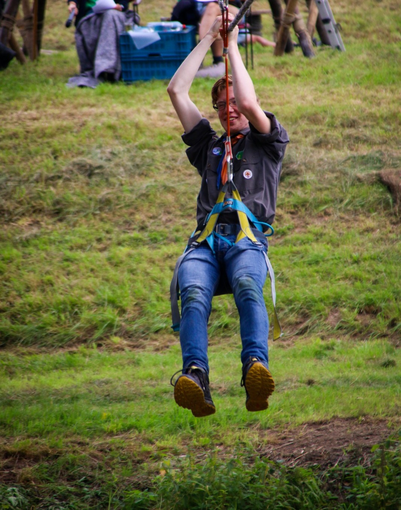

Hi, I’m Jan-Willem! I’m Dutch and was born in the historic city of Dordrecht, what means that I’m a ‘Schapenkop’ as the inhabitants of Dordrecht are called. The origin of that name comes from a story about tax dodging in the Middle Age. The city itself is quite old and has a rich history that is interwoven with a lot of major events in Dutch history. Although the city is now an island, a little bit more than 600 years ago the land to the east, south and north consisted of large polders. The islands of the province of Zeeland were a lot smaller than they are now, so Dordrecht was the access port to and from the sea. A lot of goods were transferred from river barges to larger seagoing ships and with the tax on the goods, the city grew and became very rich and powerful. This was until November 1421, when in a timespan of seven years there were multiple large floods that destroyed (according to legends) up to 72 small towns and multiple polders. The city itself was saved, but became an island and only slowly the polders were partly restored. Another result of the floods was that the flooded polders transformed into a rugged nature reserve with osier, reeds, creeks and a large tidal effect.
The fame of Dordrecht declined somewhat after that, but it was still important enough to host the first ‘Statenvergadering’ in 1572, where representatives and nobility from twelve cities in the province of Holland gathered to discuss if they are going to join the resistance against emperor Filips II and pay prince Willem van Oranje the money he needs to create an army. They agreed to do this and appoint Willem van Oranje as stadtholder. I could elaborate further, but this text would get quite long so I’ll close this section by mentioning that a lot of the old buildings in the inner city have been preserved and restored.
With the history lesson over, let’s get on with the profile sketch. I’ve lived my whole life in Dordrecht, and also went to primary school there. For secondary school I went to a school in another city close-by. After that I started the history bachelor at Leiden University. I finished the bachelor in June of this year and started this master. In my free time I work in eldercare and am a leader at a local Scouts group.
Here a short list of languages I master:
| Prior knowledge | I don't know what Peter wants us to write here about what kind of technical skills, but I'll try. My computer knowledge outside of coding is allright I think. I have a little bit of experience with coding, but the last time I did something like this was six years ago and it didn't go very well. |
| Expectations | I don't know what I expect to learn during this course, simply because I haven't really been thinking about that and can't come up with something at the moment. Coding can be useful but that depends entirely on what I will do when I finish this master. |